üõ°Ô∏è Recomendaciones reales desde 2020
⭐ Análisis imparciales por expertos
üîù‚Äã Lo probamos por ti para que elijas lo mejor
üõ°Ô∏è Recomendaciones reales desde 2020
⭐ Análisis imparciales por expertos
üîù‚Äã Lo probamos por ti para que elijas lo mejor

Contenido actualizado en junio de 2025
Bienvenido a la guía definitiva para encontrar el mejor colchón 135x190 de 2025. Si buscas un colchón viscoelástico cómodo, con buena ventilación, firmeza real y sin pagar de más, aquí tienes lo mejor tras analizar más de 15 modelos distintos.
Soy Carlos, especialista en descanso, y te comparto solo lo que merece la pena comprar, sin rodeos ni marcas metiendo mano. Si un colchón da calor, lo digo. Si es blando de más, también. Vamos con lo que realmente importa.
| Imagen | Modelo | Firmeza | Material principal | Comprar |
|---|---|---|---|---|
| 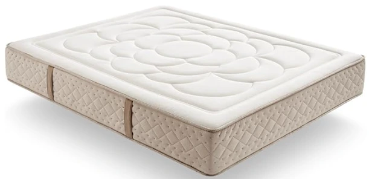 | Simpur - Viscoelástico Dream Repair | Media | Multicapa con viscoelástica Bio Sense y espuma reflex | Ver en Amazon |
| 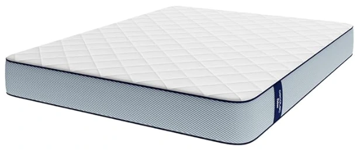 | Cecotec - Viscoelástico Flow ViscoCare 1900 | Alta | Capa ViscoCare que alinea la columna | Ver en Amazon |
| 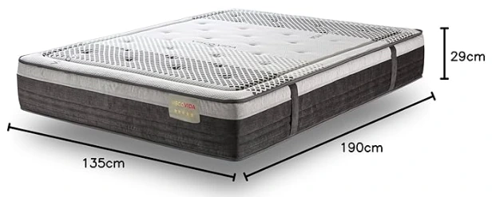 | T-ORMU - Viscoelástico Premium | Alta y soporte ortopédico | Viscoelástico con tejido AirFlow | Ver en Amazon |
| 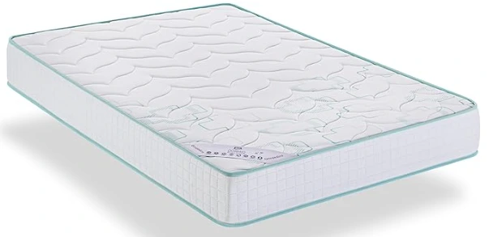 | Dormio Zafiro - Viscoelástico | Media | Viscoelástico | Ver en Amazon |
| 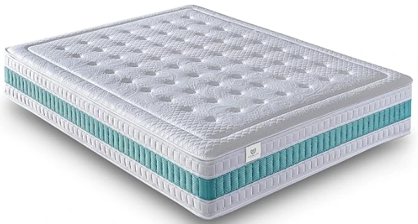 | NatureLits - MemoryVex Reversible | Media | Viscoelástica MemoryVex + núcleo Flexicell | Ver en Amazon |
| 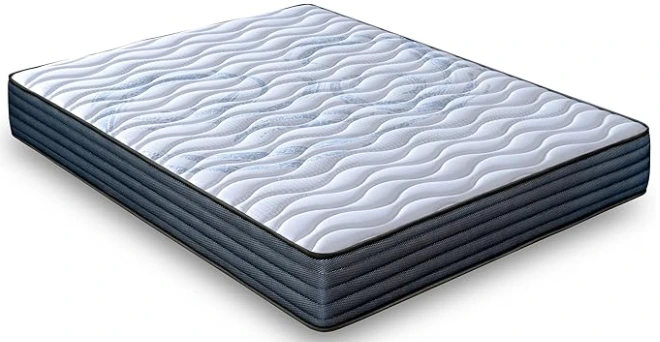 | LUXIABED - Viscoelástico Dual | Media | Viscoelástico | Ver en Amazon |
| 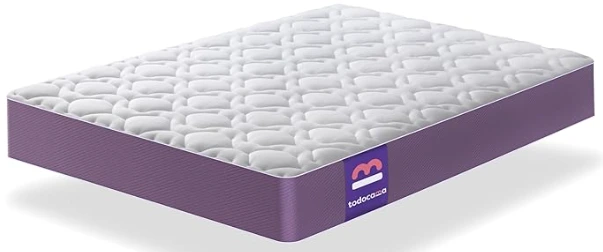 | Todocama - Viscoelástico Aloe Vera | Media-Alta | Viscoelástico | Ver en Amazon |
| 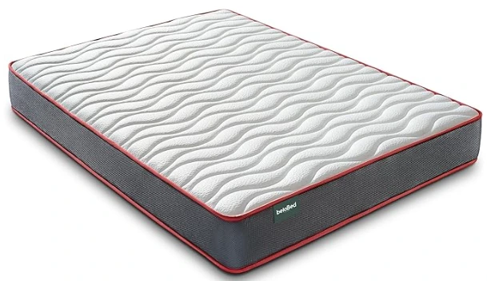 | beloBed - Viscoelástico ComfortFusion | Media | Viscoelástico | Ver en Amazon |
| 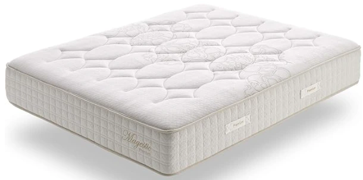 | Simpur - Muelles Ensacados Magestic | Media-Alta | Muelles ensacados + Viscoelástico HD | Ver en Amazon |
| 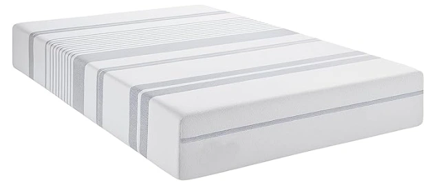 | MICAMAMELLAMA - Vibe Life Viscoelástico | Media | Viscoelástica con gel + espuma HD | Ver en Amazon |
| 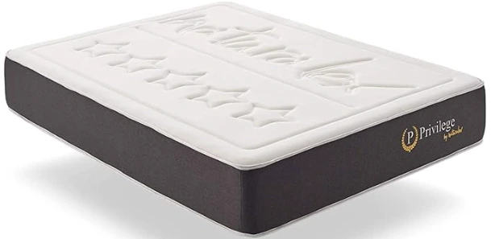 | Naturalex - Premium Privilege Viscoelástico | Media | Viscoelástico + Blue Látex | Ver en Amazon |
| Dormio - Ortopédico Multiacolchado | Media-Alta | Núcleo Eliocel + Viscoelástico | Ver en Amazon | |
| 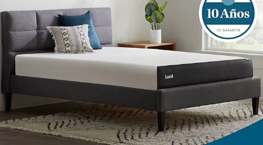 | LUCID - Viscoelástico con Carbón de Bambú | Blanda | Espuma Viscoelástica con gel + carbón de bambú | Ver en Amazon |
| 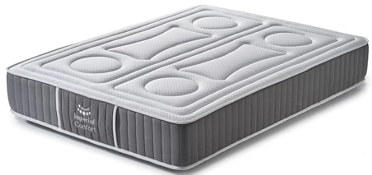 | Imperial Confort - ViscoBayscent Grafeno | Media-Alta | Espuma Viscoelástica + grafeno | Ver en Amazon |
| 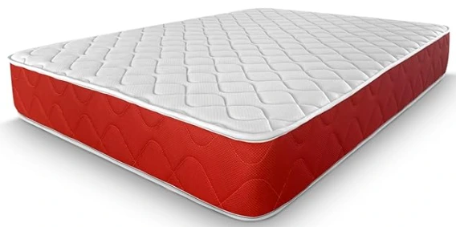 | Amuéblate Online - Visco Red Reversible | Media-Alta | Espuma HR + Viscoelástico | Ver en Amazon |
| 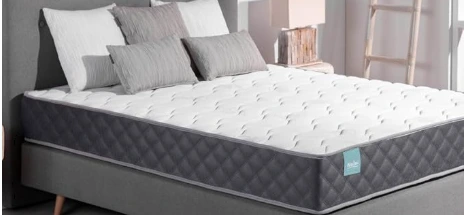 | Don descanso ZZ - Aloe Vera Mulhacén | Media-Alta | Visco acu-point + núcleo Gravitas Core | Ver en Amazon |
| 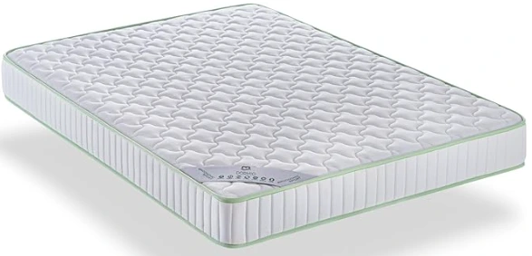 | Dormio Ergonomic Sport - Eliocel | Media | Viscoelástico | Ver en Amazon |
Firmeza Media
Material principal Multicapa con viscoelástica Bio Sense y espuma reflex
Firmeza Alta
Material principal Capa ViscoCare que alinea la columna
Firmeza Alta y soporte ortopédico
Material principal Viscoelástico con tejido AirFlow
Firmeza Media
Material principal Viscoelástica MemoryVex + núcleo Flexicell
Firmeza Media-Alta
Material principal Viscoelástico
Firmeza Media
Material principal Viscoelástico
Firmeza Media-Alta
Material principal Muelles ensacados + Viscoelástico HD
Firmeza Media
Material principal Viscoelástica con gel + espuma HD
Firmeza Media
Material principal Viscoelástico + Blue Látex
Firmeza Media-Alta
Material principal Núcleo Eliocel + Viscoelástico
Firmeza Blanda
Material principal Espuma Viscoelástica con gel + carbón de bambú
Firmeza Media-Alta
Material principal Espuma Viscoelástica + grafeno
Firmeza Media-Alta
Material principal Espuma HR + Viscoelástico
Firmeza Media-Alta
Material principal Visco acu-point + núcleo Gravitas Core
Un buen colchón no es solo aquel que se ve mullido o caro, sino el que se adapta a tu cuerpo, mejora tu descanso y cuida tu salud postural. Para mí, elegir bien el colchón es una inversión directa en cómo te sientes cada día. Dormir bien marca la diferencia entre una jornada con energía o una arrastrando el cansancio. En esta lista podrás elegir entre los mejores colchones 135x190 de Amazon, simplemente escoge la firmeza que más se adapte a ti y disfruta de un sueño reparador.
üõå Mejora tu descanso: un colch√≥n de calidad ayuda a dormir más profundo y sin interrupciones.
üîß Cuida tu espalda: aporta el soporte necesario para mantener una buena alineaci√≥n corporal.
üí§ Reduce dolores: minimiza puntos de presi√≥n y evita molestias al despertar.
⏳ Durabilidad: materiales premium que conservan su forma y firmeza durante años.
ü¶† Salud e higiene: mejores tejidos, con tratamientos antiácaros, antibacterias y transpirables.
La firmeza del colchón influye mucho en cómo descansas. No todos necesitamos lo mismo: depende de tu peso, tu postura al dormir y si prefieres una sensación más suave o más firme.
üí™ Firme: ideal si tienes más peso o duermes boca arriba.
üõãÔ∏è Media: la más versátil, funciona bien para la mayor√≠a de personas.
üåô Blanda: perfecta si duermes de lado o tienes poca masa corporal.
Si dudas entre dos firmezas, mi consejo personal es empezar por una media: es la que mejor se adapta a distintos cuerpos y posturas.
ü߆ Adaptabilidad total: la viscoelástica se amolda a tu cuerpo como un guante, reduciendo los puntos de presi√≥n.
üå°Ô∏è Termosensible: reacciona al calor corporal para adaptarse mejor a ti mientras duermes.
ü§´ Silencioso: no hace ruido al moverse, ideal para quienes se despiertan fácilmente.
üõèÔ∏è Comodidad premium: sensaci√≥n de acogida sin hundimiento excesivo.
üí∏ Buena relaci√≥n calidad-precio: ofrece gran confort sin necesidad de gastar en gamas muy altas.
⭐ Valoración del experto: 4.6/5
Este colchón ortopédico combina una estructura multicapa con espuma de alta densidad y viscoelástica Bio Sense para ofrecer un soporte ergonómico superior. Destaca por su funda con fibras naturales antibacterianas, asas laterales y sistema de 13 zonas. Ideal para personas con alergias o sensibilidad respiratoria.
⭐ Valoración del experto: 4.4/5
El colchón Flow ViscoCare ofrece firmeza alta y una combinación multicapa con tejido PureCare y núcleo FoamTech. Es reversible para usar en verano e invierno, y se adapta correctamente a la curvatura corporal sin hundirse. Una opción cómoda y accesible.
⭐ Valoración del experto: 4.5/5
Diseñado para quienes buscan firmeza y confort ortopédico, este colchón incorpora espuma HR y viscoelástica de alta densidad para cuidar la postura. Es ergonómico, transpirable, y antialérgico, ideal para descanso en pareja o personas con dolores de espalda.
⭐ Valoración del experto: 4.3/5
Colchón económico con núcleo indeformable y 2,5 cm de viscoelástica. Aporta independencia de lechos, ventilación 3D lateral y tratamiento antiácaros. Su firmeza media y 21 cm de altura lo hacen cómodo para uso diario o camas secundarias.
⭐ Valoración del experto: 4.5/5
Este colchón destaca por sus tecnologías Flexycell y MemoryVex, con diseño reversible verano/invierno y 30 cm de grosor. Es hipoalergénico, adaptable y transpirable, ideal para quienes buscan confort térmico y certificaciones de calidad.
⭐ Valoración del experto: 4.3/5
Modelo reversible con firmeza media y tecnologías MemorySens, Conf-Adapt y tejido 3D transpirable. Fabricado en España, combina adaptabilidad con confort, siendo ideal para quienes buscan una opción práctica y económica para uso diario.
⭐ Valoración del experto: 4.4/5
Colchón viscoelástico con núcleo Gelflex y sistema Airsoft de 8 capas que regula temperatura y humedad. Incluye tejido Aloe Vera con tratamiento Sanitex, ideal para climas cálidos o personas con sudoración nocturna.
⭐ Valoración del experto: 4.2/5
Colchón reversible de firmeza media con núcleo de espuma HR ComfortFusion. Su diseño multicapa y altura de 18 cm lo hacen ligero, manejable y cómodo para personas de complexión media o niños.
⭐ Valoración del experto: 4.6/5
Combinación de muelles ensacados y viscoelástica de alta densidad que ofrece una firmeza personalizada para cada zona corporal. Altamente transpirable gracias a su tejido con grafeno, ideal para climas cálidos. Máxima independencia de lechos.
⭐ Valoración del experto: 4.4/5
Colchón de viscoelástica con gel infundido y espuma de memoria para una experiencia de descanso fresca, ergonómica y confortable. Buena opción para quienes buscan adaptabilidad y alivio de presión.
⭐ Valoración del experto: 4.5/5
El colchón Privilege combina espuma AeraPur HQ con Blue Látex, logrando un descanso ergonómico, fresco y de larga duración. Sus 7 zonas de confort ofrecen gran adaptabilidad y su sistema de ventilación mantiene la frescura toda la noche.
⭐ Valoración del experto: 4.3/5
Modelo sencillo pero funcional, con altura de 19 cm y firmeza media-alta. Su núcleo indeformable Eliocel y su capa viscoelástica mejoran la postura al dormir. Apto para quien busca algo económico y correcto para uso diario.
⭐ Valoración del experto: 4.5/5
Diseñado para ofrecer una experiencia fresca, con viscoelástica de gel y partículas de carbón de bambú. Aporta suavidad, adaptabilidad y control de olores, con altura de 20 cm y estructura ergonómica.
⭐ Valoración del experto: 4.4/5
Colchón viscoelástico con tecnología de grafeno y tratamiento Bayscent Neutralizer, que ofrece durabilidad, confort y control del olor. Fabricado en España y certificado para asegurar salud y calidad.
⭐ Valoración del experto: 4.3/5
Modelo reversible con cara invierno/verano, firmeza media-alta y buena ventilación lateral. Ideal para personas alérgicas gracias a su tratamiento antibacterias, ácaros e hipoalergénico.
⭐ Valoración del experto: 4.4/5
Un colchón ergonómico con núcleo Gravitas Core y tejido Aloe Vera transpirable. Buena independencia de lechos y sensación de acogida gracias a su capa Visco acu-point. Pensado para quienes buscan equilibrio entre firmeza y comodidad.
⭐ Valoración del experto: 4.2/5
Modelo básico de Eliocel con altura de 14 cm, antialérgico y con tejido aloe vera. Perfecto para camas nido, habitaciones juveniles o uso esporádico. Fabricado en España con certificación Aitex.
Después de probar estos colchones 135x190 en distintos contextos (uso diario, calor, parejas, etc.), tengo claras mis recomendaciones. No hay uno perfecto para todo el mundo, pero estos tres destacan dependiendo de lo que busques:
El Simpur Dream Repair es, sin duda, uno de los colchones viscoelásticos más completos y avanzados que puedes comprar hoy. Con una altura de 30 cm y estructura multicapa, combina una base HR de alta densidad con una capa viscoelástica Bio Sense que ofrece un soporte ergonómico de 13 zonas. El resultado es un descanso estable, cómodo y adaptado a cualquier tipo de cuerpo. Además, su funda de lujo está enriquecida con fibras naturales antiolor, antibacterianas y antiestáticas, ideal para personas alérgicas o con sensibilidad respiratoria.
Regula la temperatura, evita humedades, absorbe olores y tiene una durabilidad excelente. Es un colchón pensado para quienes quieren dormir bien de verdad, noche tras noche.
üõèÔ∏è Simpur - Viscoelástico Dream Repair en AmazonMe parece el equilibrio perfecto entre firmeza, comodidad y durabilidad. El T-ORMU - Viscoelástico Premium tiene una altura generosa, sujeci√≥n firme sin ser duro, y materiales de calidad que lo hacen ideal para descansar bien durante a√±os. Muy buena opci√≥n si lo vas a usar a diario en una cama de matrimonio.
üõèÔ∏è T-ORMU - Viscoelástico Premium en AmazonEl Dormio Zafiro es perfecto si buscas algo barato que no sea una tabla ni un desastre t√©rmico. Tiene un núcleo que no se deforma, visco de 2,5 cm y transpiraci√≥n lateral. Ideal para segundas viviendas, habitaciones de invitados o presupuestos ajustados.
üõèÔ∏è Dormio Zafiro - Viscoelástico en AmazonPara climas cálidos o personas calurosas, el Todocama Viscoelástico destaca por su sistema Airsoft y tejido 3D. Regula muy bien la temperatura y evita sudoraci√≥n. No es el más mullido, pero s√≠ uno de los más frescos y saludables por ese precio.
üõèÔ∏è Todocama - Viscoelástico Aloe Vera en AmazonNo hace falta gastar una fortuna para dormir bien. Si estás buscando un colch√≥n 135x190 barato pero c√≥modo, aqu√≠ tienes opciones que ofrecen una excelente relaci√≥n calidad-precio. He seleccionado modelos que, por menos de lo que imaginas, te garantizan buen descanso, materiales fiables y valoraciones positivas en Amazon.
Depende de lo que busques. La viscoelástica ofrece una gran adaptabilidad y alivio de presión. Los muelles ensacados aportan transpirabilidad y firmeza diferenciada por zonas. La espuma HR es más económica y duradera, pero menos envolvente.
Sí. Un colchón más alto (25-30 cm) suele ofrecer más capas de confort y mejor ergonomía, sobre todo para personas de peso medio-alto. Los de menos de 20 cm pueden ser más firmes y básicos, pero adecuados para camas nido o usos esporádicos.
Es un material que se adapta al cuerpo por la presión y el calor. Alivia puntos de presión y mejora la alineación de la columna. Cuanto mayor sea su densidad y grosor, más efecto memoria notarás.
Son pequeños muelles independientes que se adaptan a cada zona del cuerpo, ofreciendo firmeza progresiva y mayor independencia de lechos. Son recomendables para parejas o personas calurosas.
Modelos como el Todocama - Viscoelástico Aloe Vera o el Simpur - Muelles Ensacados Magestic son ideales. Ambos regulan la temperatura y ofrecen buena ventilación.
üõèÔ∏è Todocama - Viscoelástico Aloe Vera en Amazon üõèÔ∏è Simpur - Muelles Ensacados Magestic en AmazonLa mayor√≠a de especialistas recomiendan firmeza media-alta para mantener la columna bien alineada. Modelos como el T-ORMU - Viscoelástico Premium están dise√±ados justo para eso.
üõèÔ∏è T-ORMU - Viscoelástico Premium en AmazonEl Dormio Zafiro - Viscoelástico es una opci√≥n con buena firmeza, viscoelástica de 2,5 cm y tratamiento antiácaros por un precio muy competitivo.
üõèÔ∏è Dormio Zafiro - Viscoelástico en AmazonSe recomienda girarlo (de pies a cabeza) cada 3 meses. Si es reversible, tambi√©n puedes voltearlo (de cara a cara) cada 6 meses para prolongar su vida útil.
Los colchones de núcleo HR o viscoelásticos sin muelles son los más adecuados. Asegúrate de que indique compatibilidad con somieres articulados en la ficha técnica.
Depende de tu peso y posición al dormir. Si duermes boca arriba o tienes más de 80 kg, mejor uno firme. Si duermes de lado o eres más ligero, uno medio te resultará más cómodo.
En general entre 24 y 48 horas. Es importante abrirlo pronto tras la compra y dejarlo en posición horizontal sin peso encima durante ese tiempo.
El T-ORMU - Viscoelástico Premium y el NatureLits - MemoryVex Reversible son dos modelos con materiales de alta calidad, buena altura y excelentes valoraciones.
üõèÔ∏è T-ORMU - Viscoelástico Premium en Amazon üõèÔ∏è NatureLits - MemoryVex Reversible en Amazon